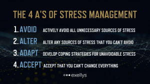
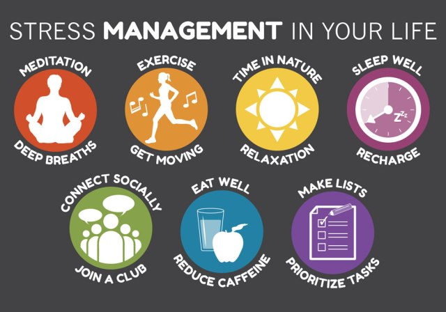
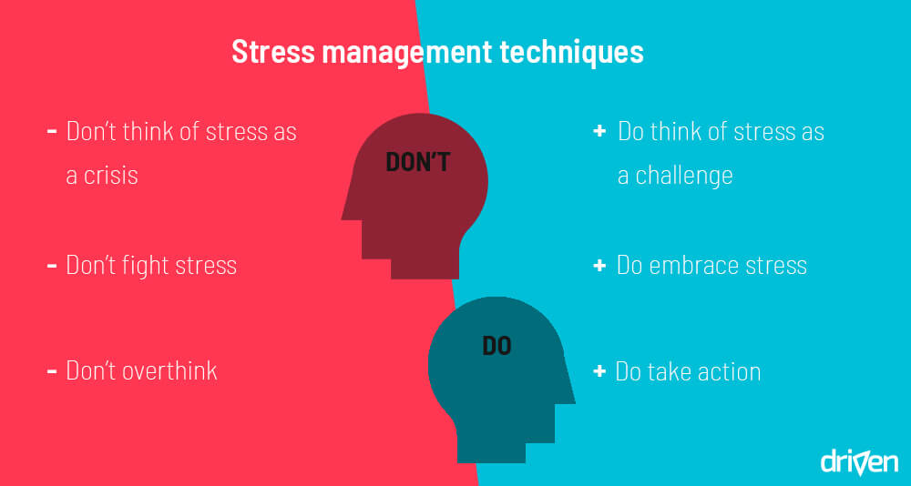

Session Details
- Date: 4th December 2020
- Topic: Stress Management
- Resource Person: Dr. B.M.K. Perera
Topics covered in this session
- What is Stress?
- What is Stress Mnagement?
- The Stress Management Tips
What is Stress and Stress Management?
Stress is your body’s response to changes in your life. Because life involves constant change—ranging from everyday, routine changes like commuting from home to work to adapting to major life changes like marriage, divorce, or death of a loved one—there is no avoiding stress.
Your goal shouldn't be to eliminate all stress but to eliminate unnecessary stress and effectively manage the rest. There are some common causes of stress that many people experience, but each person is different.
Stress can be effectively managed in many different ways. The best stress management plans usually include a mix of stress relievers that address stress physically and psychologically and help to develop resilience and coping skills.
The Stress Management Tips
- Identify the sources of stress in your life
It’s all too easy to overlook how your own thoughts, feelings, and behaviors contribute to your everyday stress levels.Sure, you may know that you’re constantly worried about work deadlines, but maybe it’s your procrastination, rather than the actual job demands, that is causing the stress.
To identify your true sources of stress, look closely at your habits, attitude, and excuses:
- Do you explain away stress as temporary (“I just have a million things going on right now”) even though you can’t remember the last time you took a breather?
- Do you define stress as an integral part of your work or home life (“Things are always crazy around here”) or as a part of your personality (“I have a lot of nervous energy, that’s all”)?
- Do you blame your stress on other people or outside events, or view it as entirely normal and unexceptional?
Until you accept responsibility for the role you play in creating or maintaining it, your stress level will remain outside your control.
- Practice the 4 A’s of stress management
While stress is an automatic response from your nervous system, some stressors arise at predictable times: your commute to work, a meeting with your boss, or family gatherings, for example. When handling such predictable stressors, you can either change the situation or change your reaction. When deciding which option to choose in any given scenario, it’s helpful to think of the four A’s: avoid, alter, adapt, or accept.
- Avoid unnecessary stress
- Alter the situation
- Adapt to the stressor
- Accept the things you can’t change

- Get moving
While you’ll get the most benefit from regularly exercising for 30 minutes or more, it’s okay to build up your fitness level gradually. Even very small activities can add up over the course of a day. The first step is to get yourself up and moving. Here are some easy ways to incorporate exercise into your daily schedule:
- Put on some music and dance around.
- Take your dog for a walk.
- Walk or cycle to the grocery store.
- Use the stairs at home or work rather than an elevator
- Park your car in the farthest spot in the lot and walk the rest of the way.
- Pair up with an exercise partner and encourage each other as you work out.
- Play ping-pong or an activity-based video game with your kids.

- Connect to others
There is nothing more calming than spending quality time with another human being who makes you feel safe and understood. In fact, face-to-face interaction triggers a cascade of hormones that counteracts the body’s defensive “fight-or-flight” response. It’s nature’s natural stress reliever (as an added bonus, it also helps stave off depression and anxiety). So make it a point to connect regularly—and in person—with family and friends.
Of course, it’s not always realistic to have a pal close by to lean on when you feel overwhelmed by stress, but by building and maintaining a network of close friends you can improve your resiliency to life’s stressors.
- Make time for fun and relaxation
Beyond a take-charge approach and a positive attitude, you can reduce stress in your life by carving out “me” time. Don’t get so caught up in the hustle and bustle of life that you forget to take care of your own needs. Nurturing yourself is a necessity, not a luxury. If you regularly make time for fun and relaxation, you’ll be in a better place to handle life’s stressors.
- Set aside leisure time. Include rest and relaxation in your daily schedule.
- Do something you enjoy every day. Make time for leisure activities that bring you joy, whether it be stargazing, playing the piano, or working on your bike.
- Keep your sense of humor. This includes the ability to laugh at yourself. The act of laughing helps your body fight stress in a number of ways.
- Take up a relaxation practice. Relaxation techniques such as yoga, meditation, and deep breathing activate the body’s relaxation response, a state of restfulness that is the opposite of the fight or flight or mobilization stress response.
- Manage your time better
Poor time management can cause a lot of stress. When you’re stretched too thin and running behind, it’s hard to stay calm and focused. Plus, you’ll be tempted to avoid or cut back on all the healthy things you should be doing to keep stress in check, like socializing and getting enough sleep.
- Don’t over-commit yourself. Avoid scheduling things back-to-back or trying to fit too much into one day. All too often, we underestimate how long things will take.
- Prioritize tasks. Make a list of tasks you have to do, and tackle them in order of importance. Do the high-priority items first.
- Break projects into small steps. If a large project seems overwhelming, make a step-by-step plan. Focus on one manageable step at a time, rather than taking on everything at once.
- Delegate responsibility. You don’t have to do it all yourself, whether at home, school, or on the job. If other people can take care of the task, why not let them?
- Maintain balance with a healthy lifestyle
In addition to regular exercise, there are other healthy lifestyle choices that can increase your resistance to stress.
- Eat a healthy diet. Well-nourished bodies are better prepared to cope with stress, so be mindful of what you eat.
- Reduce caffeine and sugar. The temporary “highs” caffeine and sugar provide often end with a crash in mood and energy.
- Avoid alcohol, cigarettes, and drugs. Self-medicating with alcohol or drugs may provide an easy escape from stress, but the relief is only temporary.
- Get enough sleep. Adequate sleep fuels your mind, as well as your body. Feeling tired will increase your stress because it may cause you to think irrationally.
- Learn to relieve stress in the moment
When you’re frazzled by your morning commute, stuck in a stressful meeting at work, or fried from another argument with your spouse, you need a way to manage your stress levels right now. That’s where quick stress relief comes in.
The fastest way to reduce stress is by taking a deep breath and using your senses—what you see, hear, taste, and touch—or through a soothing movement. By viewing a favorite photo, smelling a specific scent, listening to a favorite piece of music, tasting a piece of gum, or hugging a pet, for example, you can quickly relax and focus yourself.
